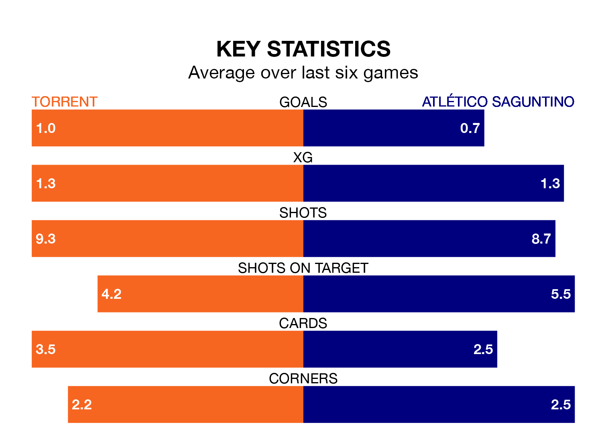

Atlético Saguntino travel to Torrent on early Sunday in the Segunda División RFEF Group 3.
The visitors come into the game on the back of a win in their last match, having beaten SD Formentera 1-0 at home.
Torrent, meanwhile, drew their last match, 1-1 against UD Alzira.
In the last 10 years, Torrent and Atlético Saguntino have played each other on six occasions. They won two each, and they drew twice.
On average, Torrent scored 1.2 goals and Atlético Saguntino 0.8 in those matches.
Their last meeting was on October 14, when Torrent won 2-0 away.
Torrent are sixth in the table after 23 games, of which they have won nine and drawn six, earning 33 points.
Atlético Saguntino are six places behind the home team in 12th, with eight wins and five draws putting them on 29 points.
Torrent are in mixed form in the Segunda División RFEF Group 3, with three wins and a draw from their last six games.
With two wins and a draw over that period, the visitors' form is worse – they have taken seven points from 18, compared to Torrent's 10.
With 24 goals in 23 games so far this season, the hosts are scoring at below the league average rate with 1.0 goals per game. But they are conceding fewer than average too, letting in 24 goals at a rate of 1.0 per game.
Atlético Saguntino are also below average scorers, with 1.0 goal per game, compared to a league average of 1.2. They have conceded 1.3 goals per game.
Updated: 10:08 (UTC), 23/02/24